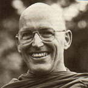

|
 |
Ajahn Sumedho (Robert
Jackman) was born in Seattle, Washington in 1934. On graduating from university,
he joined the U.S. Navy as a medical officer and served in the Korean
War. Returning to academic life, he took an M.A. in South Asian Studies
from the University of California (Berkeley) in 1963. After a short spell
working for the Red Cross, he went out to the Far East and spent two years
teaching English with the Peace Corps in Borneo. His growing interest in Buddhism took him (in 1966) to Thailand, where he sought to enter monastic life. He became a novice in Nong Khai and a bhikkhu one year later in 1967, with Chao Khun Rajapreechayamuni as preceptor. Soon after his ordination, he was taken to meet Ajahn Chah, with whom he stayed and trained for ten years. Following a -- tudong -- pilgrimage in India in 1974, he helped establish Wat Pah Nanachat and became its abbot. In 1977 Ajahn Chah was invited by the English Sangha Trust to visit Britain. He brought Ajahn Sumedho with him, and seeing the interest there, left him in London (at the Hampstead Vihara) in charge of a small group of bhikkhus. In 1979 the monks were able to move to Sussex, which marked the beginning of Chithurst Buddhist Monastery. Interest flourished, and under Ajahn Sumedho's guidance Amaravati Buddhist Centre near London was established in 1984, in addition to branch monasteries in the north and south-west of England, and also in Switzerland and New Zealand. In 1981 Ajahn Sumedho was appointed an -- Upajjhaya -- (preceptor). He was also president (1983--87) of the London-based Buddhist Society. |
|
The following teaching is taken from the first two talks given by Venerable
Ajahn Sumedho to the monastic community of Amaravati during the winter
retreat of 1988. TODAY IS THE FULL MOON OF JANUARY and the beginning of our winter retreat. We can have an all-night meditation sitting tonight to commemorate the auspiciousness of the occasion. It's very fortunate to have an opportunity such as this to devote ourselves for two months to one-pointed reflection on Dhamma. The teaching of the Buddha is the understanding of The Way Things Are -- being able to look, to be awake. It means developing attentiveness, brightness, and wisdom -- developing the Eightfold Path, which we call bhavana. Now when we're reflecting on things as they are, we're 'seeing', rather than interpreting through a veil of self-view. The big obstacle all of us have to face is this insidious belief in the 'I am' -- attachment to self-view. It's so ingrained in us that we're like fish in the water: water is so much a part of the fish's life that it doesn't notice it. The sensory world we've been swimming in since our birth is like that for us. If we don't take time to observe it for what it really is then we'll die without getting any the wiser. But this opportunity as a human being has the great advantage for us of our being able to reflect -- we can reflect on the water we're swimming in. We can observe the sensory realm for what it is. We're not trying to get rid of it. We're not complicating it by trying to add to it -- we're just being aware of it as it is. We're no longer deluding ourselves by appearances, by fears, desires and all the things we create in our mind about it. This is what we mean when we use such terms like: 'It is as it is.' If you ask someone who is swimming in water, 'What is water like?', then they simply bring attention to it and say, 'Well, it feels like this. It's this way.' Then you ask, 'How is it exactly? Is it wet or cold or warm or hot...?' All of these words can describe it. Water can be cold, warm, hot, pleasant, unpleasant... But it's just like this. The sensory realm we're swimming in for a lifetime is this way! It feels like this! You feel it! Sometimes it's pleasant. Sometimes it's unpleasant. Most of the time it's neither pleasant nor unpleasant. But always it's just this way. Things come and go and change, and there's nothing that you can depend on as being totally stable. The sensory realm is all energy and change and movement; all flux and flow. Sensory consciousness is this way. Now we're not judging it; we're not saying it's good or it's bad, or you should like it, or you shouldn't; we're just bringing attention to it -- like the water. The sensory realm is a realm of feeling. We are born into it and we feel it. From the time the umbilical cord is severed we're physically independent beings; we're no longer physically tied to anybody else. We feel hunger; we feel pleasure; we feel pain, heat, and cold. As we grow, we feel all kinds of things. We feel with the eyes, the ears, the nose, the tongue, the body; and with the mind itself. There is the ability to think and remember, to perceive and conceive. All this is feeling. It can be lots of fun and wonderful, but it can also be depressing, mean and miserable; or it can be neutral -- neither pleasant nor painful. So all sensory impingement is The Way It Is. Pleasure is this way; pain is this way. The feeling of neither pleasure nor pain is this way. To be able to truly reflect on these things, you have to be alert and attentive. Some people think that it is up to me to tell them how it is: 'Ajahn Sumedho, how should I be feeling right now?' But we're not telling anybody how it is; we're being open and receptive to how it is. There's no need to tell someone how it is when they can find out for themselves. So this two months of finding out how it is, is a valuable opportunity. Many human beings it seems, are not even aware that such a development of wisdom is possible. What do we mean when we use this word wisdom? From birth to death, this is the way it is. There's always going to be a certain amount of pain, and discomfort, unpleasantness and ugliness. And if we're not aware of it as it really is -- see it as Dhamma -- then we tend to create a problem out of it. The span between birth and death becomes all very personal; it becomes fraught with all kinds of fears and desires and complications. We suffer a lot in our society from loneliness. So much of our life is an attempt to not be lonely: 'Let's talk to each other; let's do things together so we won't be lonely.' And yet inevitably, we are really alone in these human forms. We can pretend; we can entertain each other; but that's about the best we can do. When it comes to the actual experience of life, we're very much alone; and to expect anyone else to take away our loneliness is asking too much. When there's physical birth, notice how it makes us seem separate. We're not physically joined to each other, are we? With attachment to this body we feel separate and vulnerable; we dread being left alone and we create a world of our own that we can live in. We have all kinds of interesting companions: imaginary friends, physical friends, enemies, but the whole lot of it comes and goes, begins and ends. Everything is born and dies in our own minds. So we reflect that birth conditions death. Birth and death; beginning and ending. During this retreat, this kind of reflection is highly encouraged: contemplate what birth is. Right now we can say: 'This is the result of being born; this body. It's like this: it's conscious and it feels, there's intelligence, there's memory, there's emotion.' All these can be contemplated because they are mind objects; they are dhammas. If we attach to the body as a subject, or to opinions and views and feelings as 'me' and 'mine', then we feel loneliness and despair; there's always going to be the threat of separation and ending. Attachment to mortality brings fear and desire into our lives. We can feel anxious and worried even when life is quite all right. So long as there's ignorance -- avijja -- regarding the true nature of things, fear is always going to dominate consciousness. But anxiety is not ultimately true. It's something we create. Worry is just that much. Love and joy and all the best in life, if we are attached to them, are going to bring the opposite along also. That's why in meditation we practise accepting the feeling of these things. When we accept things for what they are, we're no longer attached to them. They just are what they are; they arise and cease, they're not a self. Now from the perspective of our cultural background, how does it appear? Our society tends to reinforce the view that everything is 'me' and 'mine'. 'This body is me; I look like this; I am a man; I am an American; I am 54 years old; I am an abbot.' But these are just conventions, aren't they? We're not saying I'm not these things; rather we're observing how we tend to complicate them by believing in the 'I am'. If we attach to them, life becomes so much more than it actually is; it becomes like a sticky web. It gets so complicated; whatever we touch sticks to us. And the longer we live the more complicated we make it. So much fear and desire comes from that commitment to 'I am' -- to being somebody. Eventually they take us to anxiety and despair; life seems much more difficult and painful than it really is. But when we just observe life for what it is, then it's all right: the delights, the beauty, the pleasures, are just that. The pain, the discomfort, the sickness, are what they are. We can always cope with the way life moves and changes. The mind of an enlightened human being is flexible and adaptable. The mind of the ignorant person is conditioned and fixed. Whatever we fix on is going to be miserable. Being a man, or being a woman, as a permanent belief, is always going to make life difficult. Any class we identify with -- middle class, working class, American, British, Buddhist, Theravadin Buddhist -- grasping to any of these will produce some kind of complication, frustration and despair. Yet conventionally, one can be all these things -- a man, an American, a Buddhist, a Theravadin; these are merely perceptions of mind. They are adequate for communication; but they're nothing more than that. They're what is called sammuttidhamma -- 'conventional reality'. When I say, 'I'm Ajahn Sumedho,' that's not a self, not a person; it's a convention. Being a Buddhist monk is not a person -- it's a convention; being a man is not a person, it's a convention. Conventions are as they are. When we attach to them out of ignorance, we become bound and limited. That's the sticky web! We're blinded; being deluded by the convention. When we let go of the conventions, we don't throw them away. I don't have to kill myself or disrobe; the conventions are all right. There's no suffering involved in any of these if there is the awakened mind seeing them for what they are; they just are as they are. They're merely a convenience; expedient to time and place. With the realisation of 'ultimate reality' (paramatthadhamma), there is the freedom of Nibbana. We are free from the delusions of desire and fear; this freedom from conventions is the Deathless. But to realise this we have to really look at what attachment is. What is it all about? What is suffering, and attachment to the 'I am' process? What is it? We're not asking anybody to deny themselves; attachment to the view of being nobody is still somebody. It's not a matter of affirmation or negation but of realisation; of seeing. To do this we use mindfulness. With mindfulness we can open to the totality. In the beginning of this retreat, we open to the whole two months. On the first day, we've already accepted in full awareness all possibilities: sickness and health, success and failure, happiness and suffering, enlightenment or total despair. We're not thinking, 'I'm only going to get..., I only want to have..., I want to have only the nice things happen to me. And I've got to protect myself so that I'll have an idyllic retreat; be perfectly safe and tranquillised for two months.' That in itself is a miserable state, isn't it? Instead, we take all the possibilities, from the best to the worst. And we're doing this consciously. That means: everything that happens during these two months is part of the retreat -- it's a part of our practice. The Way Things Are is Dhamma for us: happiness and suffering, enlightenment or total despair -- everything! If we practise this way, then despair and anguish take us to calm and peace. When I was in Thailand I had a lot of these negative states -- loneliness, boredom, anxiety, doubt, worry and despair. But accepted as they are, they cease. And what's left when there's no more despair? The Dhamma that we're looking at now, is subtle. Not subtle in the sense that it's high up -- it's so ordinary, so very much here and now that we don't notice it. Just like the water for the fish. Water is so much a part of its life the fish doesn't notice it; even though it's swimming in it. Sensory consciousness is here, now. It's this way. It's not distant. It's not really difficult. It's just a matter of paying attention to it. The way out of suffering is the way of mindfulness: mindful-awareness or wisdom. So we keep bringing our attention to the way things are. If you have nasty thoughts, or feel resentful, bitter or irritated, then notice what it feels like in your heart. If we're frustrated and angry during this time, it's all right because we've already allowed for that to happen. It's a part of the practice; it's the way things are. Remember, we're not trying to become angels and saints -- we're not trying to get rid of all our impurities and coarseness and just be happy. The human realm is like this! It can be very coarse and it can be pure. Pure and impure are a pair. To know purity and impurity is mindfulness-wisdom. To know that impurity is impermanent and not-self is wisdom. But the minute we make it personal -- 'Oh, I shouldn't have impure thoughts!' -- we're stuck again in the realm of despair. The more we try to have only pure thoughts, the more the impure thoughts keep coming. That way we make sure we're going to be miserable for the whole two months; guarantee it. Out of ignorance we create a realm for ourselves that can only be miserable. So in mindfulness, or full mindedness, all misery and all happiness are of equal value: no preferences. Happiness is this way. Misery is this way. They arise and they cease. Happiness is still happiness; it's not misery. And misery is still misery; it's not happiness. But it is what it is. And it's nobody's and it's only that much. And we don't suffer from it. We accept it, we know it and we understand it. All that arises ceases. All dhamma is not self. So I offer this for your reflection. |
| Home Page |